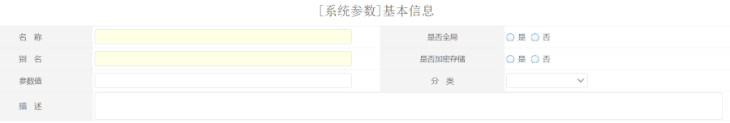
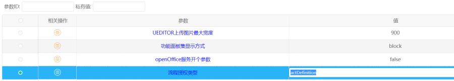

功能说明
系统参数就是平台中的一些参数，可以通过这个参数进行设置，打开系统中的一些开关。比如redis配置。这些参数一般是在系统中进行初始化，一般情况下我们只需要修改这些参数，当然参数也可以通过系统添加，但是需要通过代码调用。
操作步骤
1.添加参数

名称：参数名称
是否全局:是否为全局参数，全局参数的意思是整体租户都有效，私有参数，意思是每个租户可以设定自己的参数。
别名:参数别名，这个值唯一。
是否加密存储：是否使用密文存放参数，在数据库中使用密文存储。
参数值：系统参数的值
分类：用户可以自行添加。
描述：描述参数的用途
2.租户参数管理
系统配置-》系统管理-》私有参数管理

私有参数租户可以设置值，这些参数只对租户有影响。
3.平台中通过API获取
接口类为：
com.redxun.sys.core.util.SysPropertiesUtil
获取参数的方法如下：
1.根据key获取属性。
SysProperties getGlobalPropertyObj(String key)；
2.根据key获取属性值
String getGlobalProperty(String key)；
3.根据key获取整形属性值
Integer getGlobalPropertyInt(String key);
4.根据key获取boolean型的属性值
Boolean getGlobalPropertyBool(String key)；
5.根据key获取Long型的属性值
Long getGlobalPropertyLong(String key)
6.根据key和租户Id获取属性值
String getTenantProperty(String key,String tenantId)
7.根据key和租户Id获取长整型的属性值
Long getTenantPropertyLong(String key,String tenantId)；
8.根据key和租户ID获取整形的属性值。
Integer getTenantPropertyInteger(String key,String tenantId)
9.根据key和租户ID获取布尔型的属性值。
Boolean getTenantPropertyBoolean(String key,String tenantId)